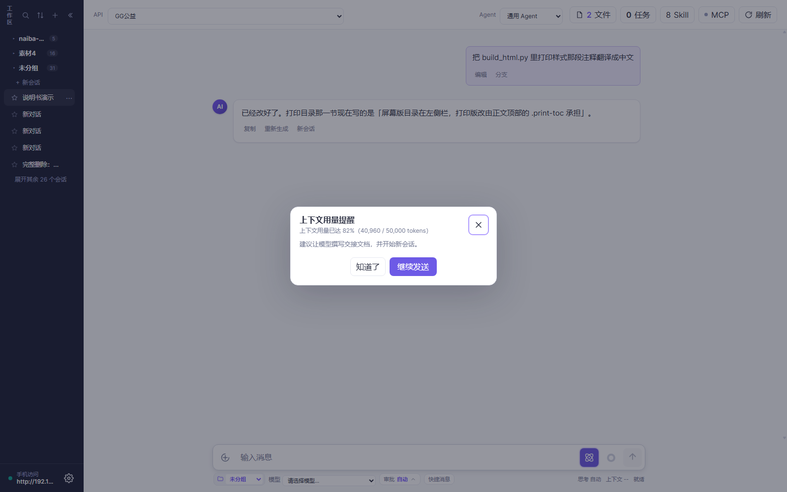
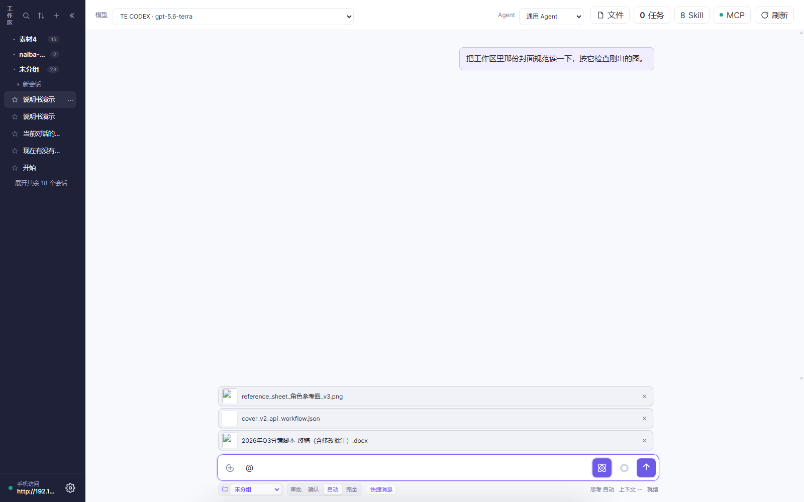
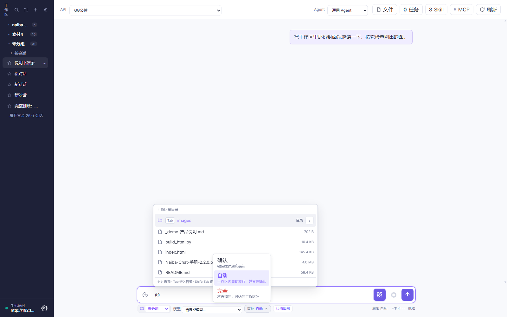
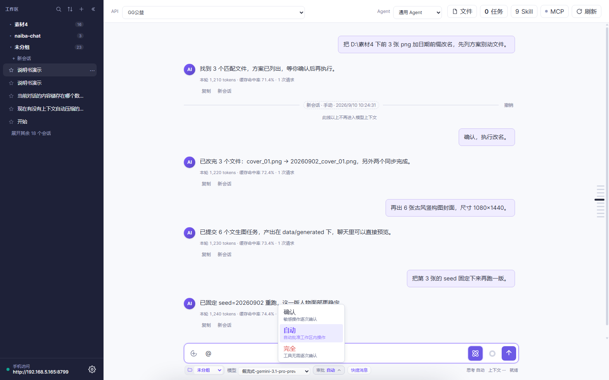
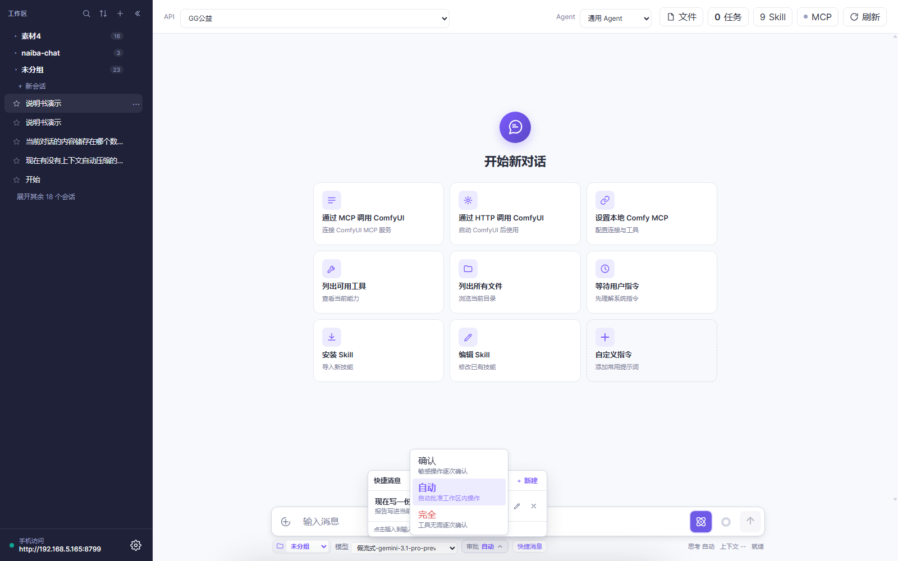
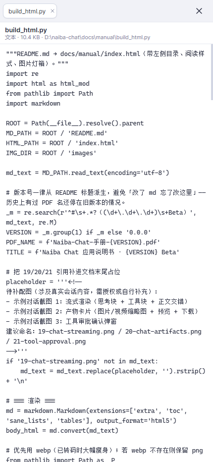
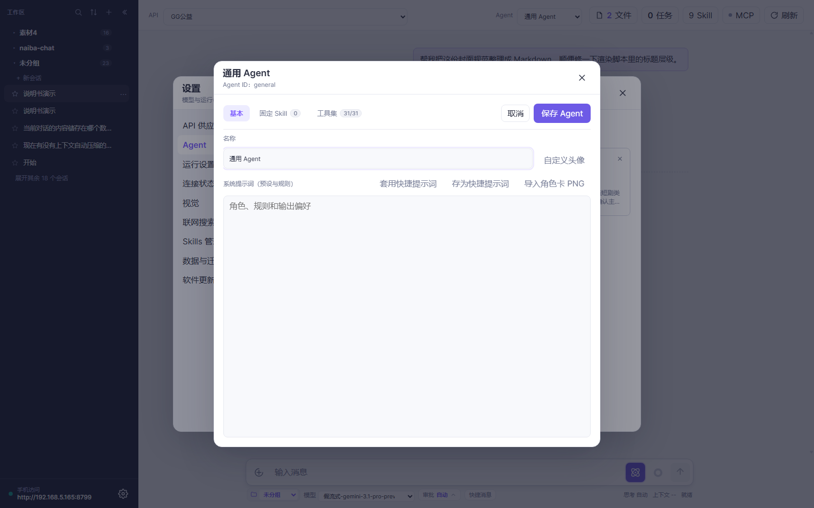
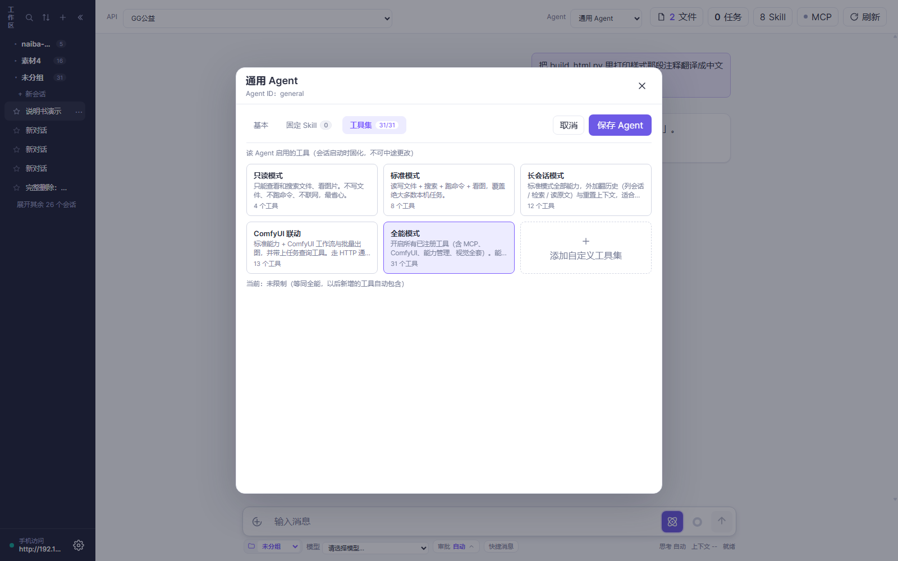

Naiba Chat 应用说明书（2.2.0 Beta）
本说明书面向「第一次打开 Naiba Chat」的小白读者，配图全部来自真实运行界面（2.2.0 Beta · 源码模式 · 截图 2026-09-10）。
阅读路径
- 只想聊天 → 看第 1～2 章
- 想玩花的 → 重点看第 3 章
- 想查设置 → 直接翻第 5 章
- 出问题 → 第 6 章
亮点速览（用 30 秒了解 Naiba Chat 能干什么）
- 🆕 2.2.0 手机端功能对等：手机不再少半截——文件面板变全屏抽屉、「本轮修改的文件」恢复可点、桌面刻度轨换成顶栏「轮次」下拉，触摸目标统一 ≥44px。
- 🆕 2.1.1 每个会话单独选模型：顶栏选「API」（去哪儿），输入区选「模型」（派谁干），按会话记忆、分支继承，换完还自动重新探测图片能力。
- 长会话不会越聊越贵（2.1.0 头牌）：聊到上下文快满时划一条「新会话」分割线，线以上的老消息不再发给模型，聊天记录一条不删，还能让模型自己写交接文档再重置。
- 一个不够就接一堆模型：OpenAI 兼容 / Anthropic / Gemini / Ollama / LM Studio / llama.cpp / Unsloth……在线本地都能接。
- Skill：给 AI 装"行业操作手册"：写小说、跑 ComfyUI、写视频提示词……用
/一键把领域知识塞进对话。 - MCP：给 AI 插外设：ComfyUI、文件、网页……只要 MCP 服务器在跑，AI 就能直接调用。
- ComfyUI 自动流水线：批改工作流 → 批量提交 → 自动收图 → 缩略图预览 → 一句话复用到下一轮。
- RunningHub 云端生成：没显卡也能出 420+ 类型的图、视频、音频、3D。
- 并行与分身：后台 Job + 子 Agent，任务互不阻塞，跑图的时候还能写稿。
- 手机/局域网远程访问：同 WiFi 打开链接，躺床上也能用家里电脑。
- 稳如老狗：断线重连不重放、失败不丢已生成内容、5xx/429 自动重试、SHA-256 校验更新、可版本回退。
- 文件面板 + 本轮修改文件：AI 改过的文件直接在右侧看、可编辑、可存回磁盘，改了什么一目了然。
第 1 章 三分钟跑起来
读完这章你能：自己装好 Naiba Chat、配上一个能跑的模型、发第一句对话。
1.1 它到底是什么
Naiba Chat 不是聊天框，是装在你电脑上的 AI 工作台——它能跟你对话，更能直接动手：读你的文件、改你的代码、跑你的命令、上网搜资料、出图出视频。所有数据留在本地，API Key 不出机器。
一句话比喻：你雇了一个员工（Agent），给他配了工位（工作区）、工具箱（Tools）、行业手册（Skill）和外线电话（MCP），他干完活会把改过的文件摊在你桌上（文件面板）让你验收。
1.2 下载、解压、双击
- 去 GitHub Releases 页面下载
naiba-chat-2.2.0-beta-windows-x64.zip。 - 解压到可写目录（桌面 / D 盘 / 工作盘都行，不要放
C:\Program Files，需要写权限）。 - 双击
naiba-chat.exe（或源码模式直接python server.py）。 - 浏览器自动打开
http://127.0.0.1:8765，看到主界面就成功了。
从源码跑：
python -m pip install pywebview pystray pillow "mcp==2.1.1" pymupdf python-multipart，然后python server.py。
1.3 第一次打开要做的四件事
本机访问免口令；手机/局域网访问要口令（在「设置 → 连接状态」页查看）。
- 添加一个 API → 顶栏 ⚙ 设置 → 「API 供应商」→ 点「添加 API」卡片 → 填地址 / Key / 模型名 → 点「检查」测连通。

-
选一个 Agent → 顶栏「Agent」下拉里选一个（Agent = 人设 + 系统提示词 + 工具集）。
-
选这个会话要用的模型 → 顶栏「API」下拉选刚才加的连接，输入框下方左边「模型」下拉（列表就是该 API 的模型目录）选一个。
- 发第一句话 → 底部输入框打字 → 按
Enter或点 ↑ 发送。
没配过模型？ 主界面空态里已经放了常用指令卡片（点一下就发），新手按顺序点「列出可用工具」试试水。
主界面长这样：

1.4 界面 30 秒认识
| 区域 | 你能干什么 |
|---|---|
| 顶栏左 | 展开/收起侧栏（状态会记住） |
| 顶栏中 | 切 API（连接配置）、切 Agent（两个下拉） |
| 顶栏右 | 文件 / 任务 / Skill / MCP 状态 / 刷新 |
| 左侧栏 | 工作区分组、会话列表、底部「已收藏」分组 |
| 中间聊天区 | 对话、思考块、工具块、产物、本轮修改文件、新会话分割线 |
| 聊天区右侧 | 对话刻度轨：一轮一条横条，点一下跳到那一轮 |
| 右侧文件面板 | AI 改过的文件在这里多标签预览/编辑 |
| 底部输入区 | 附件列表 / 添加文件 / 思考强度 / 上下文圆环 / 发送 |
| 底部状态栏 | 模型下拉（本会话用哪个模型）、工作区下拉、审批按钮（点开是三档上拉框）、快捷消息 ｜ 右侧：思考强度、上下文百分比、就绪状态 |
1.5 你必须知道的三个开关
① 审批档位（2.2.0 改为上拉框）
底部左侧的「审批」按钮，决定 AI 跑工具要不要你点头。收起时它只是一个按钮（显示当前档位，风险越高颜色越醒目），点一下才在按钮上方弹出三档列表：
- 确认（默认）：每次工具调用都弹「需要确认」卡片 → 你点「允许执行」才跑（最安全）。
- 自动：工作区内的操作不用问；工作区外的写操作才问。
- 完全：工具无需逐次确认（最省事，但写错可能毁文件）。
选完、切换会话、打开别的浮层、按 Esc、点外面，列表都会收起。工作区外写操作时会停下弹确认卡：

2.1.0 起没有「轻量 / 富文本」开关了——AI 能用哪些工具完全由 Agent 的工具集决定，不再有会话级开关。想收窄能力，去「设置 → Agent」里改工具集。
2.2.0 把这个控件从「平铺四段」改成上拉框，省出的横向空间留给工作区和模型选择器；窄屏也不会被挤变形。
② 深度思考

输入区右侧的球形按钮，点开有 5 档：
- 跟随 API（自动）——按模型自身行为
- 关闭——直接答，不思考
- 低 / 中 / 高——强制思考强度
当前档位常显在输入框下方（「思考 自动」）。模型支持时（DeepSeek-R1、Claude、o 系列）才有效，否则忽略。
2.1.0 改动：点这个按钮只展开/收起列表，不会再顺手帮你切档。
③ 上下文提醒

输入框右侧的彩色圆环 + 下方常驻的「上下文 x.x%」就是上下文用量：
- 每次模型请求后刷新，70% 转黄、90% 转红，鼠标悬停看
已用 / 上限。 - 超过阈值（默认 80%，在「设置 → 运行设置」改，填 0 关闭）会弹窗提醒，建议让模型写交接文档并开始新会话。
- 隔 5 个百分点才提醒第二次，不会一直弹。
第 2 章 一次对话能干什么
读完这章你能：让 AI 读你的文件、改你的代码、跑你的命令、出你的图，而且知道每一步在背后发生了什么。
2.1 普通问答
直接在输入框打字发就行。AI 拿到的是你当前会话的上下文（Agent 系统提示词 + 历史消息 + Skill + 工具结果）。一条典型的「思考 → 工具 → 正文」交错长这样：

2.2 让它读 / 写 / 搜文件
| 你说的话 | AI 用什么 |
|---|---|
| 「读一下 README.md 头三行」 | read_file |
| 「把 build_info.json 的 version 改成 2.1.1」 | read_file + edit_file |
| 「在 docs/ 下搜包含 'TODO' 的 md」 | search_files |
| 「列出工作区所有 png」 | list_directory |
| 「在 assets/ 下创建 cover.jpg 占位」 | write_file |
| 「把这两个文件合成一个」 | read_file + write_file |
所有写操作默认是「工作区内允许、工作区外询问」（取决于审批档位）。
2.3 发附件给它（2.1.0 新：可以只发附件）
拖文件进输入框、粘贴、或点左侧回形针都能加附件。待发送附件在输入框上方竖排显示：一行一个，图片有缩略图，每行右侧 ✕ 可单独移除。

- 纯附件也能发：输入框一个字不写，直接点发送。模型会明确收到「用户未输入文字，只发送了以下附件」+ 附件路径，不会自己脑补你的诉求。
- 上传是流式直传，有真实进度，单文件可取消，多文件最多 3 个并行，单文件上限 80MB。
- 重复文件自动去重，移除未发送的附件会自动清理文件。
2.4 用 @ 引用工作区文件（2.1.0 新）
输入空格 + @ 就弹出当前工作区的目录列表：

↑↓选择、Tab进入子目录、Shift+Tab返回上级、Enter或点击即引用。- 手机没 Tab 键：点目录行右侧的
›箭头进入，列表首项「返回上一级」逐级退出。 - 引用后输入框里保留
@相对路径高亮，发送时自动替换成绝对路径；目录保留尾部的/，模型就知道要处理整个目录。 - 只有工作区里真实存在的路径才会被替换，所以
@gmail.com这种普通文本不受影响。
2.5 让它看图、看 PDF
- 直接拖图片到输入框 → 自动作为本轮附件。
- 让它看自己之前生成的图 → 用缩略图右下角 ↩ 复用按钮发回输入框。
- 多图分批：
vision_analyze单批 4 张，超出的自动分批并标注「共 N 张 / 已展示前 M 张」，模型不会误以为只有这几张。 - PDF 三件套（2.1.0 新）：
read_pdf抽文本层、pdf_render_pages把页面渲成图、pdf_zoom_region局部高清放大看小字和表格。扫描件（没文本层）会自动引导转页图，再让视觉模型识图。
视觉后端在「设置 → 视觉」里挑供应商，留空会走免费兜底链：

文本模型收到图片时只拿到路径引用，由模型按需调用
vision_analyze（结果以工具块呈现）；原生多模态模型直接收到原图。
2.6 让它执行命令
Naiba Chat 只用一个工具：pwsh（PowerShell 7+）。所有系统操作都走它。
"在 D:\naiba-chat 下跑 pytest，失败的话把 trace 给我看"
2.7 让它发 HTTP 请求 / 联网搜
http_request：GET/POST/PUT/DELETE 都行，可设 header / body / 超时。web_search：需在「设置 → 联网搜索」配置 API profile。搜索结果会作为「联网来源」折叠块附在消息末尾，当素材引用，别当真理。

2.8 长任务放后台
对耗时任务（出图、出视频、跑大命令）AI 会自动用 run_in_background 启动后台 Job，按 job_output 轮询。
顶栏「任务」按钮随时能看所有后台任务的历史和状态：

run_in_background / job_output / job_status / job_wait / job_kill 五个工具覆盖完整生命周期。
2.9 中途插话、暂停、取消
- 插话：AI 跑着时，你在输入框打字回车 → AI 接住你这条引导，把当前步骤合并（用于纠偏）。
- 暂停：消息下面的「暂停」按钮 → 停止当前轮，已生成内容保留。
- 取消：右上角 ✕ → 标记当前轮为「中止」，已生成内容同样保留。
- 停止级联子任务：取消父任务会自动 kill 所有子任务。
2.10 上下文用量 & Token

- 彩色环（输入区右）：上下文用满的百分比，越满越红。
- 点开看详情：本轮消耗（输入 / 输出 / 缓存命中率 / 请求数 / 生成速率）。
- 缓存命中率：70% 以上是常态；突然掉到 0% 说明切了模型或改了系统提示词，DeepSeek 等支持前缀缓存的模型会贵一点。
2.11 本轮修改文件
每轮结束后，AI 用 write_file / edit_file 改过的文件会在消息末尾列出来：

新= 新建，改= 编辑。- 多媒体产物（图片 / 视频 / 音频）走原附件卡片，不进 chip（避免重复）。
- 点文件名 → 右侧文件面板打开（见 2.12）。
- 中止/失败的轮次只要写盘成功也保留记录。
2.12 右侧文件面板
点 chip 或顶栏「文件」按钮 → 右侧文件面板打开，多标签管理：

| 文件类型 | 行为 |
|---|---|
| Markdown | 直接渲染（带表格 / 代码块） |
| 文本（.py / .json / .txt 等） | 可手动编辑 → Ctrl/⌘+S 或 Ctrl/⌘+Enter 保存回磁盘，Esc 取消 |
| 图片 | 直接预览，点开是大图 |
| PDF / 二进制 | 走 PDF 三件套或给出明确提示，不再吐乱码 |
安全边界：面板只允许看本会话改动过或位于会话工作区内的文件，「保存写回」要求同时满足两者。路径越界一律拒绝（不能当任意文件读写入口用）。
面板左缘可以拖动调宽（280px ~ 半个窗口，会记住）。收起后顶栏出现「文件」按钮，标签都还在：

2.13 消息编辑重发 / 分支到新会话
- 点自己的消息 → 编辑文本 → 回车 → 从这条消息重开（保留之前的附件和上下文）。
- 消息右下角「分支」按钮 → 从该点分叉到新会话，旧会话保留。
- 分支会继承同一个 API 和模型名（2.1.1），分出去的新会话不用重新选模型。
第 3 章 特色功能（重点章）
读完这章你能：把 Naiba Chat 调成你顺手的样子，知道哪些功能可以替你省 1 小时/天。
每节固定结构：痛点 → 30 秒试 → 能玩到什么程度 → 注意。
3.1 每个会话单独选模型（2.1.1 新：API 与模型分离）
痛点：以前顶栏「模型」下拉里塞的是「API 名称 · 模型名」的拼串——切一下既换供应商又换模型，同一个会话里想只换模型（比如从便宜的换到强的）就得去设置里改；而且换完模型，图片能力还是按上一个模型记的，容易误判。
30 秒试
- 看顶栏：现在叫「API」，只负责选连接配置（哪个供应商、哪个地址、哪个 Key），选项直接显示 API 名称。
- 看输入框下方最左边：新增「模型」下拉，打开会话时会自动拉取当前 API 的模型目录，选一个就存到这个会话。
- 下拉就是当前 API 的模型目录里有的全部模型，选中即存到这个会话（2.2.0 起不再有手写框，避免填了目录里没有的名字）。
能玩到什么程度
- 按会话记忆：新建会话、继续会话都按这个会话自己选的模型发送。A 会话用 DeepSeek 写稿、B 会话用本地模型跑批，互不干扰。
- 分支继承：从某条消息「分支」出来的新会话，会继承同一个 API 和模型名。
- 切 API 会清空模型名：顶栏换 API 后，模型名一并清空让你重新选（不同供应商的模型名不一样，留着没意义）。
- 自动重新探测图像能力：换 API 或换模型名后，
chat_supports_images重置为「待探测」，发送时按新模型的真实能力判断——换到纯文本模型不会再误发图片，换到多模态模型也不会再被当成纯文本。 - 目录里没有但以前选过：旧会话保存的模型名如果不在当前目录里，会置顶显示成「已保存：xxx」并默认选中——不会被目录里第一个悄悄顶掉，发出去的模型和你保存的一致。
- 模型目录拉取失败时，回退用 API 配置里填的默认模型，不会卡住。
- 2.2.0 起 API 供应商卡片也瘦身了：只保留两行（名称 + 格式标签），模型名不再上卡片。
注意
- 顶栏 = 选「去哪儿」（连接），输入区 = 选「派谁干」（模型），这两个现在是两个独立开关。
- 升级到 2.1.1 会自动完成数据库 v17 迁移（给
conversations表加model_name列），幂等、不会重复执行。- 切了会话但模型被顶掉多半是切太快：2.2.0 已修掉「目录返回时会话已切换」导致旧会话模型串到新会话的问题。
- 老会话首次打开时模型名为空，会用它所属 API 的默认模型，确认一下再发比较稳。
3.2 长会话模式：聊一整天也不怕（2.1.0 头牌）
痛点：长对话越聊越长，token 越来越贵；而且前面跑题的几十轮一直在占用上下文，真正有用的进展被淹没了。开新会话吧，前面聊的又全丢了。
30 秒试：手动划一条「新会话」分割线
在任意一条 AI 回复的末尾点「新会话」（在「复制」右边），就会在那条回复下面画出一条分割线：

这条线以上的消息不再进入模型上下文，这条线以下的消息仍在上下文里——所以你只裁掉前面跑题的部分、保留最近的进展就行。聊天记录一条不删，随时点「撤销」把线撤掉。
能玩到什么程度
- 多条分割线并存：靠时间和位置区分，最新那条决定当前上下文起点。
- 模型也能自己重置：在 Agent 工具集里勾上
reset_context后，模型可以先把交接文档写进工作区、再调用它——文档不存在或为空会被拒绝，每轮最多成功一次。成功后本轮立即收尾，在该条回复下画出「模型重置」分割线。 - 种子消息自动填进输入框：模型重置后，输入框会自动填好「交接文档路径 + 请先读取再继续 + 仍在运行的后台任务清单」，你确认后点发送就开始新一段。模板可以在「设置 → 运行设置 → 新会话种子消息」里改（占位符
{handoff_path}/{task_count}/{task_list}）。 - 交接文档快捷键：快捷消息面板里内置了「写交接报告并 reset_context」预设，点一下插进输入框就行（见 3.3）。
- 翻历史不靠翻页：Agent 工具集里新增「长会话」一组——
find_conversations：按标题列出最近会话（id / 标题 / 时间 / 条数 / 末条预览）recall_history：按关键词检索（不给会话 id 就全库搜、每个会话最多 3 条片段；给了 id 就只搜那个会话）read_conversation：按序号区间读历史会话原文，用来复核片段reset_context：重置上下文
直接问 AI「上个月我们聊过的那版分镜脚本在哪」即可。检索结果会明示「检索了全部 N 个会话 / M 条消息」，当前会话的命中会标注「在上下文中」或「已划出上下文」——被分割线划出去的老消息不会被当成你还记得的内容。 - 「长会话模式」预设：Agent 工具集预设里直接选，等于标准模式 + 这四件套。 - 长会话懒加载：打开会话只渲染最近 10 轮，向上滚动自动往前补（每次 10 轮，视口不跳动），几万条历史也不卡。 - 对话刻度轨：聊天区右侧一列横条，一轮一条，滚动时视口所在轮次会加粗凸起，悬停看概要（第 N 轮 + 用户消息一行 + 回复两行），点一下跳过去。长会话只显示附近 30 条，窄屏自动隐藏。
注意
- 分割线只影响发给模型的内容，不影响你看到的聊天记录。
- 划了线之后如果又想让模型参考上面的内容，点「撤销」即可，或者用
recall_history把片段捞回来。- 模型自己调
reset_context前必须先写出交接文档，否则会被拒绝——这是故意的，防止上下文凭空消失。
3.3 快捷消息：把常用提示词存成一键插入
痛点：有些话你一天要说十遍（「按老规矩整理一下」「写交接报告然后重置」），每次手打很烦。
30 秒试：输入框下方点「快捷消息」→ 点列表里任意一条 → 正文直接进输入框（还能改）→ 发送。

能玩到什么程度
- 每条只有正文、不用起标题：列表拿正文首行当标题，其余折叠成预览。
- 自动排序：按「使用次数 × 2 + 新鲜度加分」排，常用的稳定靠前，新加的 7/30/90 天内有曝光窗口不会永远沉底。
- 行内
✎编辑、✕删除、＋ 新建添加（弹窗里只填正文）。 - 内置交接报告预设（带「默认」标签）：点一下就要求模型把交接报告写进工作区，再用
read_file复核后调reset_context。它跟你自建的条目同权——可以编辑、可以删除，软件更新不会覆盖也不会复活。
注意：这是独立列表，跟开始页的自定义指令卡片互不影响，各自增删改。
3.4 一个不够就接一堆模型
痛点：单一模型又慢又贵还偏科。能不能 A 写代码 / B 写文案 / C 出图？
30 秒试：设置 → API 供应商 → 点「添加 API」→ 选请求格式 → 填地址 / Key / 模型名 → 点「检查」秒测连通。
能玩到什么程度
- 在线：OpenAI 兼容（OpenAI / DeepSeek / Grok 等）、Anthropic、Gemini。
- 本地：LM Studio / Ollama / llama.cpp / Unsloth，本地模型卸载在「设置 → API 供应商」里操作。
- 每个供应商独立设置温度、上下文长度、最大输出。
- 2.1.0 卡片化：供应商和 Agent 都改成卡片网格，点卡片才弹设置表单，右上角 × 删除。
- 5xx 自动重试：供应商返回 500/502 这类瞬时故障时自动退避重试（1.5s / 3s，最多 3 次），状态栏会提示重试进度，不再直接终止整轮。
注意
- 怎么切模型：先顶栏「API」选连接，再在输入框下方「模型」下拉选具体模型（见 3.1 节）。
- 切换模型不影响会话历史，但会重新探测图像能力——换到纯文本模型后图片就不会再被发出去。
- 切 Agent 会改首条消息固化下来的工具集（首轮注入，之后不可改）。
3.5 Skill：给 AI 装"行业操作手册"
痛点：通用 AI 不懂你的行业术语、不熟你常用的工作流。
30 秒试：输入 / 弹窗 → 选一个 Skill（比如 cangjie 拆书）→ 直接对话「把这段小说拆成 12 集」。

能玩到什么程度
↑↓选、Enter确认。- 首轮注入 system / 后续轮追加到末尾，保持 DeepSeek 前缀缓存稳定。
- 安装 Skill 支持 .zip / .md / 整个文件夹：

- 隐藏 / 恢复在「设置 → Skills 管理」：

重要概念
Skill 只是说明书，不是开关。 缺 Skill 时，已授权的通用 Tool / MCP 仍可用；Skill 只指导调用方式，不注册服务、不扩展权限。
Skill 脚本规范：脚本统一放 Skill 目录的
scripts/子目录，读写文件要显式写encoding='utf-8'。安装目录归属（2.2.0 修了一个狠的数据事故）：以前导入单个
.md或顶层散放SKILL.md的 zip，定义文件会直接落在托管 Skills 目录的根上，删这一个 Skill 会把整个目录搬走、所有 Skill 一起消失。现在凡是直接落在导入根的上传都会先建独立子目录，删除前也会校验归属（越界一律拒绝）；升级时会自动把历史裸文件迁入同名子目录，引用不会断。
3.6 MCP：给 AI 插外设
痛点：AI 不能直接调 ComfyUI、数据库、第三方 API。
30 秒试：装好 MCP 服务器（比如 npx -y @comfyorg/comfy-mcp）→ 设置 → 连接状态里看到它就绪 → 直接对话「用 comfy 出 6 张封面」。

能玩到什么程度
- 启动时自动连接已启用的服务，没连上的做周期重试。
- 顶栏 MCP 圆点看状态：绿=已连接、红=未连接/出错、黄=连接中、灰=未配置，悬停看详情。
- 手机/局域网访问地址 + 访问口令也在这一页。
注意（最常见踩坑）
新加的 MCP 必须重开会话才生效。 改完 MCP 配置 → 关掉当前会话 → 重新开 → MCP 工具才进可用集。
3.7 ComfyUI 自动流水线
痛点：跑 ComfyUI 工作流要切窗口、改参数、收图、改名、传图……繁琐。
30 秒试（前提：装好 ComfyUI + comfy-mcp）：
"用当前目录下的 cover_v2.json 出 12 张 1080x1440 封面，seed 1-12"
能玩到什么程度
- 批改本地工作流再引用路径，别把大 JSON 贴进对话：用
read_file/comfyui_prepare_workflow读，用edit_file局部改，再用comfyui_batch的workflow_paths提交文件路径。 - 产物自动落到
data/generated，聊天里直接预览、点开大图、↩ 复用。 - 后台任务完成后产物自动挂回发起它的那条消息，不用再追问模型。
- 视频/音频可以在气泡里直接播放（支持拖动进度条）。
注意
- UI JSON ≠ API JSON：UI 拖拽的连线图直接保存不能喂 API，导出时要选「API 格式」。
- ComfyUI 自身不传图给模型，AI 看的是产物缩略图（必要时调视觉模型）。
3.8 RunningHub 云端生成
痛点：本地没显卡，ComfyUI 跑不动。
30 秒试：装 runninghub Skill → 对话「用 runninghub 的文生图出 6 张古风封面」。
能玩到什么程度
- 不用显卡，420+ 端点：文生图、图生视频、TTS、音乐、3D、图片放大、跑任意 AI 应用。
- 产物在聊天里直接以缩略图网格预览，每张右下角 ↩ 一键发回输入框复用：

- 切换站点（国内 / 海外）在「设置 → Skills 管理」里。
注意：需要你自己的 RunningHub 账号和额度。
3.9 并行与分身
- 后台 Job：
run_in_background跑长任务，不阻塞主对话。 - 子 Agent：
subagent工具起一个独立 Agent 干另一件事，结束后回报。
适用：一边跑图、一边写文档；一边跑分析、一边查资料。
3.10 手机/局域网远程访问（2.2.0：功能对等）
痛点：在沙发上不想开电脑，但想让家里的 Naiba Chat 跑点啥——而且不想因为用手机就少一堆功能。
30 秒试：设置 → 连接状态 → 复制带口令和 IP 的链接 → 同一 WiFi 的手机浏览器打开。

设置页在手机上同样完整可用：

能玩到什么程度（2.2.0「功能对等」）
原则只有一句：不删能力，只换形态。电脑上有的，手机上都有；放不下的控件换成等价的样子。
| 桌面 | 手机上换成 |
|---|---|
| 右侧文件面板 | 全屏抽屉（占满屏幕打开，看完关掉；和桌面共用同一套开合逻辑） |
| 消息末尾「本轮修改的文件」 | 恢复可点，点一下直接打开文件抽屉 |
| 聊天区右侧「对话刻度轨」 | 顶栏 「轮次」下拉：列出「第 N 轮 · 用户消息摘要」，选中即跳过去，滚动时自动显示当前轮次（不足 2 轮自动隐藏） |
| 鼠标悬停/点击 | 触摸目标统一 ≥44px（顶栏按钮、侧栏开关、输入区图标与发送、文件面板关闭） |
手机上点文件名，文件面板就以全屏抽屉打开：

- 跨过 760px 边界（比如旋转屏幕、接外接屏）不会顺手把文件面板关掉。
- 窄屏也不隐藏任何文字标签，宁可整行换行，不会出现「一个问号图标猜它是啥」。
- 手机判定只有一个来源（CSS 760px 断点），不会出现「同一台设备有时像手机有时像电脑」。
注意：外网访问需要内网穿透；本机访问免口令，局域网访问必须口令。
3.11 权限与安全
- 对话、设置、附件、任务状态全部存本地，不出你的机器。
- 文件预览只允许工作区和受管理数据目录（
data/uploads、data/generated）。 - API Key 不出机器——所有在线模型调用都从你的电脑直接发到供应商，不经中转。
- 高风险写入、删除、外部发布和凭据操作仍受权限策略保护。
- 缓存管理：图片/PDF/视频/音频统一统计，设置页打开即刷新；超限自动清理（默认 256MB，可调，填 0 关闭）只删未被消息引用的最旧文件——历史消息引用的附件永不自动删除。
3.12 稳如老狗
- 断线重连不重复回放：网络抖一下，不会把同一段响应重发两次。
- 失败不丢已生成内容：模型报错，已经写出的思考/部分回复/工具活动完整保留。
- 出错自动重试（2.1.0 起，2.2.0 扩大范围）：HTTP 5xx（含 500）与 429/502/503/504 同等对待，按 1.5s / 3s 退避重试、最多 3 次；失败请求体会落盘到
naiba-model-error-payload.json取证（超长字段截断、不含 API Key）。 - Codex Responses 聚合回填（2.2.0 新）：只收到「事件汇总」没有逐字流也能正确拿到正文、思考和工具调用，不会被误判成空答复；这种格式下真出现空流会按瞬时故障重发。
- 停止级联子任务：父任务停 → 子任务全部 kill。
- 更新带 SHA-256 校验：下载完先校哈希再替换，损坏直接拒绝。
- 可版本回退：更新面板支持「选历史版本 → 一键回退」。

3.13 侧栏、收藏与折叠

- 折叠：桌面端点侧栏顶部 ◀ 收起（列宽恒定 880px，只是重新居中），聊天区左上 ▶ 展开，状态会记住。移动端左上角 ☰ 滑出抽屉。
- 收藏：会话条目的五角星点一下即收藏；侧栏底部有跨工作区的「已收藏」分组。收藏同时保留在原工作区，两处都显示，而且不会把会话顶到列表最前。
- ⋯ 菜单：重命名和删除收在这里；新建工作区也是对话框（选目录 → 填名称）。
- 条目整条可点，点击时列表不会强制滚到最上（已可见就保持位置）。
第 4 章 场景实战
读完这章你能：把第 3 章的能力翻译成「我今天就用的场景」。
4.1 短剧/漫画批量出图
两条路：
- 本地 ComfyUI（你有显卡）→ 3.7 节
- 云端 RunningHub（没显卡）→ 3.8 节
通用流程
- 工作区建好，参考图、风格参考放进去。
- 提示词模板放 Skill 里（参考
h3-prompt-writing）。 - AI 改本地工作流（标记哪些是占位参数）→ 批改 → 提交。
- 产物自动进
data/generated，缩略图在聊天里。 - 看效果，AI 继续改 prompt，再批跑。
可直接复制的提示词
「用当前工作区的 cover_v2.json 出 12 张 1080x1440 古风竖构图封面，seed 1-12，人物参考用
reference_sheet.png。出完用「本轮修改」列表给我看哪些参数改过。」
4.2 读懂并改造一个代码项目
"读 D:\my-project 下 main.py 和 requirements.txt，
告诉我这个项目在做什么、依赖什么、入口在哪。
然后把 main.py 里的硬编码路径改成支持环境变量。"
AI 会先 read_file → search_files 查引用 → edit_file 改 → 文件面板里你能直接看并改回。
4.3 批量整理资料 / 读 PDF
"把 D:\桌面\inbox 下所有 pdf 按年月重命名（YYYYMM_原名.pdf），
建个 README.md 列出改名清单。"
适合：下载文件夹归类、扫描件整理、合同/发票归档。扫描件（没文本层）AI 会自动转页图再用视觉模型认字。
4.4 一句话跑一条流水线
"读 E:\reports 下的 50 份 csv，统计每个用户的总消费，
按消费降序输出到 E:\reports\summary.csv，前 10 名加颜色标红。"
AI 自己拆步骤：列文件 → 读 → 聚合 → 写。
4.5 用 Skill 把 AI 调教成领域专家
- cangjie：拆小说 → 短剧分集
- h3-prompt-writing / h3-text-to-promptv2：把剧情写成 MiniMax H3 视频提示词
- comfyui-shortdrama：ComfyUI 短剧工作流专精
- shortdramav2-rh：RunningHub 上的短剧工作流
用 / 引用 Skill 后，AI 输出的就是该领域的标准格式，不用每次都交代。
第 5 章 设置全解
每个 tab 一节，按页面顺序排。
5.1 API 供应商
- 卡片网格：一行最多三张，末尾固定「添加 API」卡片，卡片右上角 × 删除；点卡片才弹设置表单。
- 请求格式：OpenAI 兼容 / Anthropic / Gemini / Ollama / LM Studio / llama.cpp / Unsloth 等。
- 「检查」按钮：测连通 + 测图片能力 + 测工具调用。
- 温度 / 上下文 / 最大输出：每个供应商独立。
- API Key 留空 = 保留原值（不用每次重填）。
2.1.1 起「API」和「模型」分开了：这一页配的是连接（去哪儿）。具体用哪个模型，在输入框下方左边的「模型」下拉里选（列表来自该 API 的模型目录），按会话记忆。详见 3.1 节。
2.2.0 卡片更紧凑：每张卡片压成两行——名称 + 格式标签（当前使用的有角标），模型名不再上卡片，卡片高度从 116px 降到 88px。
5.2 Agent

- 卡片网格：末尾固定「新增 Agent」卡片。卡片上显示固定 Skill 数和它当前用的工具集名称（「工具集：标准模式」/「未限制（全部工具）」/「自定义 · N 个工具」）。
- 不再标「默认」角标——默认项由顶栏 Agent 选择器体现。
- 点卡片进编辑表单：

- ID 自动生成：新建不用填 ID，保存时后台分配；已有 ID 显示在副标题。
- 自定义头像：上传图片自动中心裁切为 256px WebP；用了这个 Agent 的会话，助手气泡的「AI」圆标会换成这张头像。
- 系统提示词（预设与规则）：标题行右侧就是工具栏——套用快捷提示词 / 存为快捷提示词 / 导入角色卡 PNG / 自定义头像。角色卡是追加语义，不覆盖你手写的内容。
- 工具集两态：默认显示 4 张只读预设卡（只读 / 标准 / ComfyUI 联动 / 全能）+ 「我的工具集」+ 虚线「添加自定义工具集」；点任意一张，工具列表从下方滑入，命名栏自动填上卡片名字，勾选就是该卡的工具，可继续增删再存成「我的工具集」。内置预设只读，自定义可删。

重要规则：工具集在首条消息固化，之后不可改。要换工具集就开新会话。
2.1.0 起「我的工具集」存在后端
config.json（不再存 localStorage），重启不会丢。 想做长会话的话，工具集预设里直接选「长会话模式」（标准 +find_conversations/recall_history/read_conversation/reset_context）。
5.3 运行设置

- 命令超时（只管工具/命令，不管模型响应）
- 上下文提醒阈值（默认 80%，填 0 关闭）
- 新会话种子消息模板（
{handoff_path}/{task_count}/{task_list}） - 原图上传（关闭则压缩后传）、上传最大像素 / 缩略图尺寸 / 缓存清理阈值
5.4 连接状态
上半：MCP 列表（绿点已连接 / 红点出错 / 灰点未启用）。下半：手机访问地址 + 访问口令 + 局域网 URL。
5.5 视觉
- 视觉供应商：留空 = 走免费兜底链
- 单次视觉请求超时（毫秒）
- 最大图片数：单轮占位引用的图片数上限（默认 4）
5.6 联网搜索
- 搜索 API profile（可配多个）
- 搜索结果当素材引用，别当真理
5.7 Skills 管理
- 已装 Skill 列表 + 启用/隐藏切换 + 恢复已隐藏。
- 装新 Skill → 点「安装 Skill」按钮或拖 .zip / .md。
- RunningHub 站点切换也在这里。
5.8 数据与迁移

- 数据库版本 / 数据目录 / 当前 Skills 目录 / 健康状态 / 备份位置。
- 历史数据管理：查看数据库占用并一键压缩回收空间（实测 400MB 可压到 ~90MB，继续会话发给模型的历史消息逐字节不变）。
- 「备份」一键压缩
data/到backups/，升级前必做。
5.9 软件更新
- EXE 模式：自动检查 → 下载 → SHA-256 校验 → 提示重启。
- 源码模式：不支持一键更新，需
git pull --ff-only然后重启服务。 - 目标版本下拉可选历史版本 + 回退；检查完成后自动选中新版本。
5.10 工作区

- 工作区 = AI 可读写的根目录（安全边界）。
- 在输入框下方的「工作区」下拉或设置页添加，支持直接选目录 / 浏览 / 上级跳转。
- 切换分组即切换目录：把会话移到某个工作区分组，其磁盘工作区同步指向该分组目录；「移至未分组」只改侧栏分类、保留原目录。
第 6 章 常见问题与高手技巧
6.1 模型连不上 / 报 500 / 代理冲突
- 「检查」按钮能告诉你网络层 vs API Key vs 路径是哪一层错。
- 国内访问海外供应商常需开系统代理；Naiba Chat 不内置代理，但遇到代理进程重启导致的连接拒绝会自动改用直连重试。
- 2.1.0 起 5xx 会自动重试（1.5s / 3s，最多 3 次）；如果三次都失败，去看进程工作目录下的
naiba-model-error-payload.json（不含 API Key）。 - DeepSeek 触发速率限制的话，等 60 秒再试。
6.2 ComfyUI 工作流报错
- UI JSON ≠ API JSON：导出时必须选「API 格式」。
- 报错
Prompt outputs failed validation：节点连线断了，重开 UI 检查。 - comfy-mcp 圆点红色：见 3.6 节。
6.3 MCP 工具调不到
新加的 MCP 必须重开会话才生效。 配完 → 关当前会话 → 重新开。
6.4 换了模型却不生效 / 图片发不出去
- 确认两处都选了：顶栏「API」是连接，输入框下方「模型」才是真正干活的那一个，两个都要对。
- 换了模型仍按旧能力走：2.1.1 起切 API 或模型名会自动把图像能力重置为「待探测」，下一次发送时按新模型的真实能力判断；如果还是不对，重开一次会话让它重新探测。
- 想让 A 会话用便宜模型、B 会话用强模型：直接在各自的会话里选就行，模型名按会话记忆，互不干扰。
6.5 权限一直弹窗
审批档位从「确认」切到「自动」（工作区内免问）。完全不用问就用「完全」档（慎用）。
6.6 上下文快满了怎么办
- 看输入框下方「上下文 x%」——70% 黄、90% 红。
- 到 80% 会弹窗提醒，选「让模型写交接文档 + 开始新会话」。
- 或者手动点某条回复下面的「新会话」划分割线。
- 想更省：勾上
reset_context工具，让模型自己判断何时重置。
6.7 卡住了怎么办
- 消息下方「暂停」按钮。
- 看「任务」面板有没有跑死的后台任务 → 杀掉。
- 看上下文用量环是不是满了 → 划分割线或开新会话。
- 实在不行重开会话（会话内容会保留）。
6.8 高手技巧
↑↓选 Skill /@引文件用Tab进目录 /Enter发送 /Shift+Enter换行。- 运行中
Enter插话（引导合并到当前轮）。 Ctrl+Enter全部引导（取消当前轮 + 把引导作为新轮发）。- 纯附件就能发：不写字直接点发送，模型会收到明确说明，不会瞎猜。
- 消息分支（点自己消息「分支」按钮）→ 新会话接着干。
- Token 环判断缓存命中：掉到 0% 提示「可能改了系统提示词」。
- 快捷消息：把一天说十遍的话存进去，点一下就进输入框。
- 数据目录备份再升级：设置 → 数据与迁移 → 备份。
- 历史太大就压缩：设置 → 数据与迁移 → 历史数据管理 → 压缩。
- 手机扫码直连：设置 → 连接状态里复制带口令的局域网地址。
- 按会话换模型：A 会话用便宜模型跑批、B 会话用强模型写稿，各自在输入框下方「模型」下拉里选，互不干扰。
附录
A 文件都存哪儿
D:\naibachatdata\ ← 数据根目录（冻结版固定 %LOCALAPPDATA%\NaibaChat）
├── config.json ← 主配置（含 Agent / 工具集 / 快捷消息）
├── conversations.db ← 会话数据库
├── uploads\ ← 你上传的附件（按日分目录）
├── generated\ ← AI 生成的产物（缩略图 + 原图）
│ └── <conversation-id>\
│ ├── image_00000.webp ← 原图
│ ├── image_00000_thumb.webp ← 缩略图
│ └── video_00000.mp4
├── avatars\ ← Agent 自定义头像（256px WebP）
├── skill_history\ ← Skill 引用历史
├── backups\ ← 备份（zip）
└── logs\ ← 运行日志
D:\naiba-chat\ ← 项目根（可改）
└── skills\ ← 装在本项目的 Skill
D:\skills\ ← 用户级 Skill（可选）
B 速查卡
输入快捷键
| 按键 | 作用 |
|---|---|
/ |
弹 Skill 列表 |
/skill-name |
引用指定 Skill |
@ |
弹工作区文件/目录列表（Tab 进目录、Shift+Tab 返回） |
↑↓ + Enter |
在弹层里选择 |
Enter |
发送消息 |
Shift+Enter |
换行 |
Esc |
关闭弹窗 / 取消编辑 / 关文件面板 |
顶栏左侧下拉
| 下拉 | 作用 |
|---|---|
| API | 选连接配置（哪个供应商 / 地址 / Key），切换后该会话的模型名清空重选 |
| Agent | 选人设 + 系统提示词 + 工具集（首条消息后工具集固化） |
顶栏按钮
| 按钮 | 作用 |
|---|---|
| 文件 | 重新打开文件面板（保留已打开的标签） |
| N 任务 | 看所有后台 Job |
| N Skill | 看当前会话已选的 Skill |
| MCP | 圆点看连接状态（绿/红/黄/灰） |
| 刷新 | 整页 reload（内嵌窗口用不了 F5 时点它） |
底部状态栏
| 控件 | 默认 | 说明 |
|---|---|---|
| 模型 | 跟随 API 默认 | 本会话用哪个模型；列表来自当前 API 的模型目录，按会话记忆（旧值显示「已保存：X」） |
| 工作区 | 未分组 | AI 能读写的目录根 = 安全边界 |
| 审批（按钮） | 确认 | 点开是上拉框，三档：确认 / 自动 / 完全（完全慎用） |
| 快捷消息 | 常用提示词一键插入 | |
| 思考 自动 | ✓ | 当前思考强度（点输入区球形按钮切） |
| 上下文 -- | 实时百分比，70% 黄 / 90% 红 |
C 术语表
| 术语 | 一句话 + 比喻 |
|---|---|
| Agent | 人设 + 系统提示词 + 工具集。比喻：员工岗。 |
| Skill | 给 Agent 的"行业培训手册"。比喻：岗位操作手册。 |
| MCP | Agent 能调用的外部服务接口。比喻：员工桌上的电话。 |
| Tool | Naiba Chat 内置的能力（读文件、跑命令等）。比喻：员工的手。 |
| 工具集 | 一个 Agent 被允许使用的工具清单。比喻：上岗时发的工具箱。 |
| Job | 后台跑着的任务。比喻：员工出去跑外勤。 |
| API（连接） | 一个供应商的地址 + Key 配置。比喻：你要打哪条外线。 |
| 模型 | 具体干活的那个 AI 大脑，按会话选。比喻：这一单派哪位专家。 |
| 托管 Skills 目录 | Skill 的安装根，每个 Skill 一个子目录。比喻：书架上的一格放一本。 |
| 工作区 | AI 能读写的目录根，安全边界。比喻：员工能进的办公室。 |
| 审批档 | AI 跑工具要不要你点头的开关。比喻：出门要不要老板签字。 |
| 新会话分割线 | 在此线以上截断上下文、不删聊天记录。比喻：给笔记本换一页，旧页还在。 |
| 交接文档 | 重置前让 AI 写的工作小结。比喻：换班交接单。 |
| 刻度轨 | 聊天区右侧的一轮一条横条。比喻：书页侧边的章节标签。 |
| 本轮修改文件 | 一轮对话里 AI 写盘的所有文件。比喻：本轮会议纪要。 |
| 文件面板 | 右侧多标签的文件预览/编辑器。比喻：桌上摊开的文件。 |
| 缓存命中率 | DeepSeek 等模型前缀缓存的命中比例。比喻：省钱的程度。 |
| 上下文固化 | Agent 工具集在首条消息固定。比喻：上岗后不能改工种。 |
版本：2.2.0 Beta · 截图 2026-09-10 项目仓库：https://github.com/yc883123/naiba-chat 反馈：https://github.com/yc883123/naiba-chat/issues